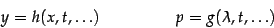
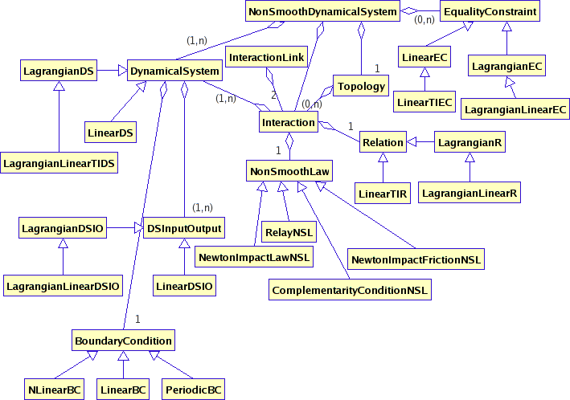

Kernel Components > Modeling
Release Information
| Project: | Siconos |
|---|---|
| Internal Release Number: | 1.0 |
| Last update: | November 29, 2006 |
| Related Documents: |
Modeling component
| What for? | all classes/objects to define a complete non smooth dynamical
system |
|---|---|
| Feature sets: | F-2.000 and F-2.010
to F-2.015; |
| Depencies: | SiconosAlgebra, xml, Plug-in system |
| Sources directory name: | Kernel/src/modelingTools/ |
To find more details on objects described in this section, see Doxygen documentation of Siconos/Kernel.
This component provides objects to describe a complete NonSmoothDynamicalSystem, which is a set of dynamical systems that interacts all together. An interaction between dynamical systems is defined with some relations between local and global variables and a non smooth law.
Thus, the modeling component contains the following objects:
- NonSmoothDynamicalSystem
Main object of this component. Composed with a set of dynamical systems (STL vector), a set of interactions, a set of equality constraints and a Topology.
It can be either an initial value or a boundary value problem.
- DynamicalSystem,
of the
form:

t represents the time. The unknowns are (x,dx/dt), the state of the system, and r the input due to non smooth law. u is a control term (size of u and size of x are different). The vector field, f, and T can be filled in
using plug-in system .
The following derived types are also available:
- LinearDS:

A, T and B either filled directly with matrices or using plug-in system.
- LagrangianDS:

with (q,dq/dt) the state of the system, p corresponds to r in DynamicalSystem.
Note that :

M is the mass operator, FInt represents the internal forces, depending on the state and FExt external forces.
Jacobian of all operators is also saved in the object. Each operator (M, NNL ... and jacobians) can be filled either directly with a matrix or using the plug-in system.
- LagrangianLinearTIDS: (lagrangian, linear and time
invariant)

K and C being respectively the rigidity and viscosity matrices.
- LinearDS:
- Interaction
This object is used to described interaction between 1 to any number of Dynamical Systems. It is composed with nInteraction relations (but only one type of relation, ie one object member) and a non smooth law (see details below), and two STL vectors: y (the output) and lambda (the input). y[i] (lambda[i]) represents derivative i of vector y (lambda).
The size of each y[i] and lambda[i] is nInteraction.
The number of derivatives depends on the relative degree of the system (see Topology class below).
For more details on what are y and lambda see examples in Templates (BouncingBall ...).
- Relation
This object defines relation between local variables (y and lambda) and state variables (x, q and their derivatives).
Its general form is: 
with h and g some plug-in.
It can also be (derived classes):
- LinearTIR (Linear Time Invariant),

- LagrangianR

H filled with a matrix or a plug-in.
- LagrangianLinearR

- LinearTIR (Linear Time Invariant),
- NonSmoothLaw
Defines the type of non smooth law between input (lambda) and output (y)
Four derived types:
- ComplementarityConditionNSL
- NewtonImpactFrictionNSL
- NewtonImpactLawNSL
- RelayNSL.h
- InteractionLink This object is created when two interactions have one or more common Dynamical Systems. It contains the two linked-interactions and a list of common
- Topology This object describes the topology of all interactions in the NonSmoothDynamicalSystem. For each interaction, it provides:
- a list of interactions linked with it
- for each relation, the relative degrees, min and max indexes
- DSInputOutput
This is an intermediate object between dynamical systems and relations. It is implemented but not used at the time.
The various derived types are:
- LinearDSIO
- LagrangianDSIO
- LagrangianLinearDSIO
- EqualityConstraint
To define algebraic relations between input and output. Not fully implemented at the time.
Different derived types are:- LinearEC.h
- LinearTIEC.h
- LagrangianEC.h
- LagrangianLinearEC.h
- BoundaryCondition
To describe boundary conditions for a NonSmoothDynamicalSystem.- LinearBC
- NLinearBC
- PeriodicBC
dynamical systems saved in a STL vector.
ModelingTools classes diagram
